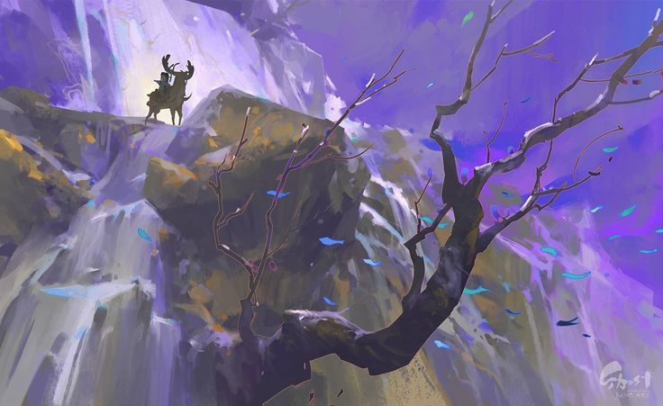
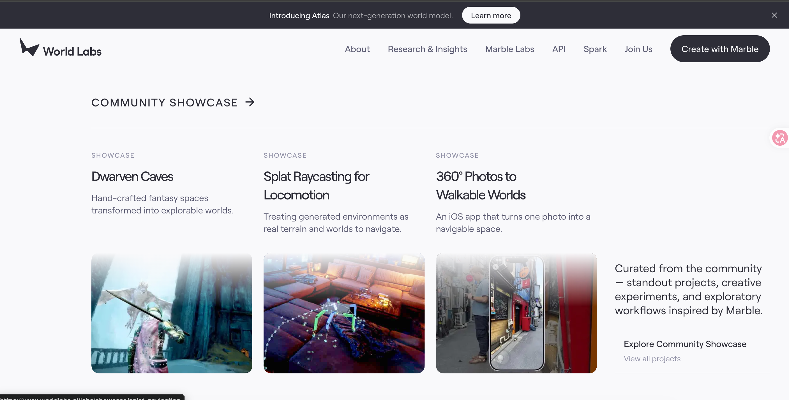
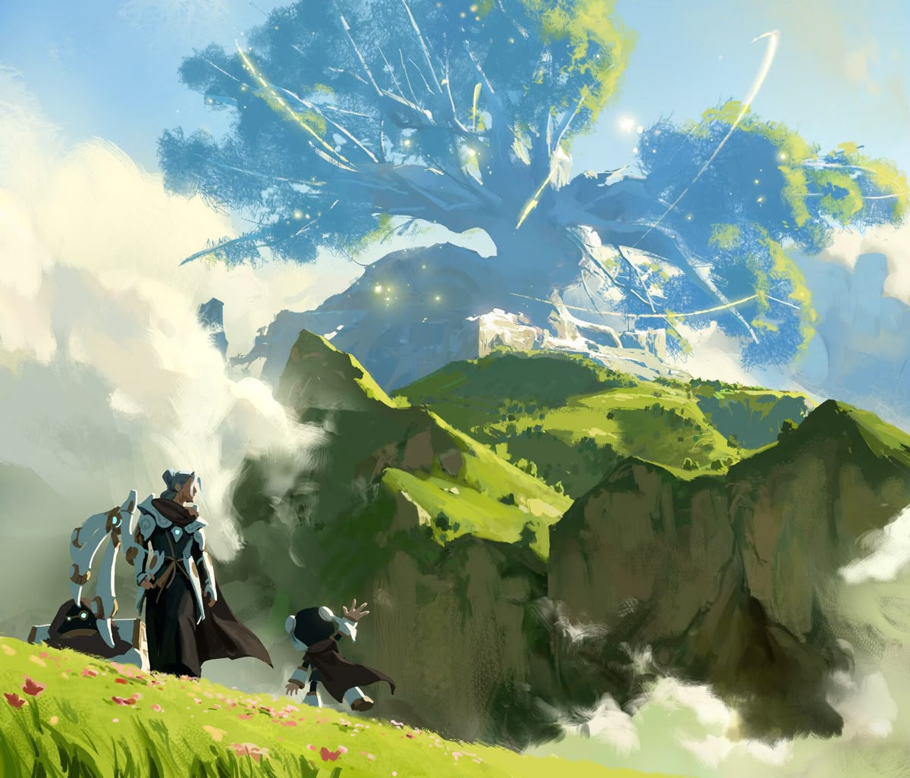

探索构建持续世界的基础模型，让人工智能真正理解叙事、角色、世界与场景。
负责故事理解、剧情规划、事件生成、因果推进与长期叙事结构。

负责角色人格、目标、情绪、关系以及长期记忆的形成、遗忘、检索和更新。

负责空间、时间、对象、地点、物品、规则、事件结果和世界状态的长期一致性，以及行动导致的状态变化。

负责把世界状态转化为可以直接感知的视觉场景，包括角色、环境、光照、空间、动作以及连续画面。